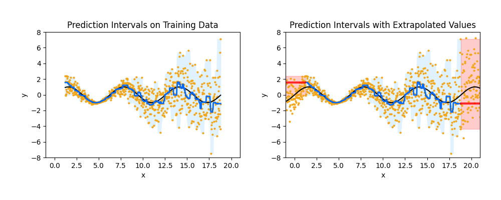

Note
Go to the end to download the full example code
Quantile regression forest extrapolation problem#
An example on a toy dataset that demonstrates that the prediction intervals produced by a quantile regression forest do not extrapolate outside of the bounds of the data in the training set, an important limitation of the approach.
print(__doc__)
import matplotlib.pyplot as plt
import numpy as np
from quantile_forest import RandomForestQuantileRegressor
np.random.seed(0)
n_samples = 1000
bounds = [-1, 21]
extrap_pct = 0.2
func = np.sin
def make_func_Xy(func, bounds, n_samples):
x = np.linspace(bounds[0], bounds[1], n_samples)
f = func(x)
std = 0.01 + np.abs(x - 5.0) / 5.0
noise = np.random.normal(scale=std)
y = f + noise
return x, y
def get_train_Xy(X, y, min_idx, max_idx):
X_train = X[min_idx:max_idx]
y_train = y[min_idx:max_idx]
return X_train, y_train
def get_test_X(X):
n_samples = len(X)
X_test = np.atleast_2d(np.linspace(-1, 21, n_samples)).T
return X_test
X, y = make_func_Xy(func, bounds, n_samples)
extrap_min_idx = int(n_samples * (extrap_pct / 2))
extrap_max_idx = int(n_samples - (n_samples * (extrap_pct / 2)))
X_train, y_train = get_train_Xy(X, y, extrap_min_idx, extrap_max_idx)
X_test = get_test_X(X)
qrf = RandomForestQuantileRegressor(
max_samples_leaf=None,
min_samples_leaf=10,
random_state=0,
)
qrf.fit(np.expand_dims(X_train, axis=-1), y_train)
y_pred = qrf.predict(X_test, quantiles=[0.025, 0.5, 0.975]) # extrapolate
def plot_extrapolations(func, X, y, extrap_min_idx, extrap_max_idx):
X_train, y_train = get_train_Xy(X, y, extrap_min_idx, extrap_max_idx)
X_test, get_test_X(X)
X_mid = X[extrap_min_idx:extrap_max_idx].ravel()
X_test_m = X_test[extrap_min_idx:extrap_max_idx].ravel()
X_test_l = X_test[:extrap_min_idx].ravel()
X_test_r = X_test[extrap_max_idx:].ravel()
y_pred_m = y_pred[extrap_min_idx:extrap_max_idx]
y_pred_l = y_pred[:extrap_min_idx]
y_pred_r = y_pred[extrap_max_idx:]
fig, (ax1, ax2) = plt.subplots(nrows=1, ncols=2, figsize=(10, 4))
ax1.plot(X_train, y_train, c="#f2a619", lw=0, marker=".", ms=4)
ax1.plot(X_train, func(X)[extrap_min_idx:extrap_max_idx], c="black")
ax1.fill_between(X_mid, y_pred_m[:, 0], y_pred_m[:, 2], color="#e0f2ff")
ax1.plot(X_mid, y_pred_m[:, 1], c="#006aff", lw=2)
ax1.set_xlim(bounds)
ax1.set_ylim([-8, 8])
ax1.set_xlabel("$x$")
ax1.set_ylabel("$y$")
ax1.set_title("Prediction Intervals on Training Data")
ax2.plot(X, y, c="#f2a619", lw=0, marker=".", ms=4)
ax2.plot(X, func(X), c="black")
ax2.plot(X_test_m, y_pred_m[:, 1], c="#006aff", lw=2)
ax2.fill_between(X_test_m, y_pred_m[:, 0], y_pred_m[:, 2], color="#e0f2ff")
ax2.fill_between(X_test_l, y_pred_l[:, 0], y_pred_l[:, 2], alpha=0.2, color="r")
ax2.fill_between(X_test_r, y_pred_r[:, 0], y_pred_r[:, 2], alpha=0.2, color="r")
ax2.plot(X_test_l, y_pred_l[:, 1], alpha=0.8, c="r", lw=3)
ax2.plot(X_test_r, y_pred_r[:, 1], alpha=0.8, c="r", lw=3)
ax2.set_xlim(bounds)
ax2.set_ylim([-8, 8])
ax2.set_xlabel("$x$")
ax2.set_ylabel("$y$")
ax2.set_title("Prediction Intervals with Extrapolated Values")
plt.subplots_adjust(top=0.15)
fig.tight_layout(pad=3)
plt.show()
plot_extrapolations(func, X, y, extrap_min_idx, extrap_max_idx)
Total running time of the script: (0 minutes 0.430 seconds)